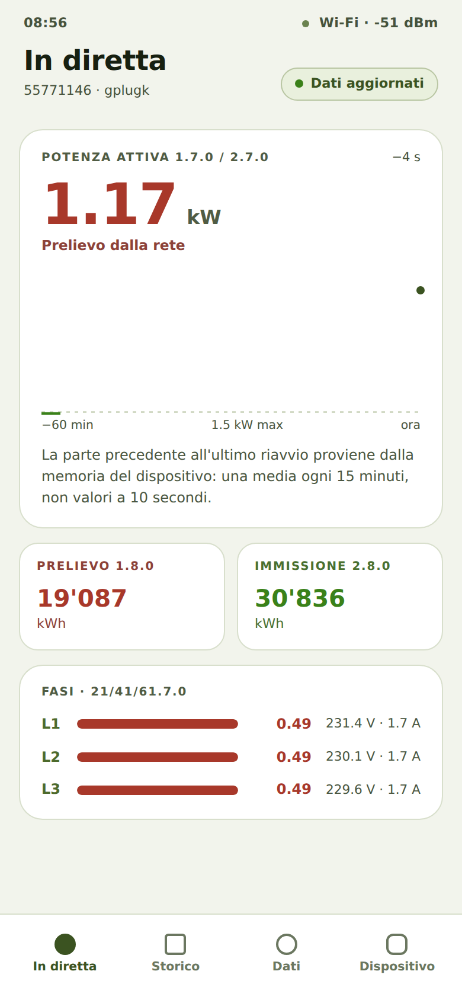

Leggere la potenza attuale e le letture del contatore
Di cosa si tratta
Come proprietario di un gPlug voglio vedere a colpo d'occhio quanta corrente sto prelevando o immettendo in questo momento, per capire il mio consumo.
Come fare
- Aprite l'indirizzo del gPlug. L'app si avvia nella scheda In diretta.
- In alto c'è la Potenza attiva 1.7.0 / 2.7.0 in kW con la direzione: Prelievo dalla rete o Immissione in rete.
- Il grafico sottostante mostra l'ultima ora (−60 min fino a ora). Toccate o passate sopra il grafico per leggere un momento preciso.
- Le schede Prelievo 1.8.0 e Immissione 2.8.0 mostrano le letture in kWh, come le indica il contatore.
- Con i profili trifase, Fasi · 21/41/61.7.0 mostra potenza, tensione e corrente per fase.

Vista in tempo reale con potenza, letture e fasi
Come capire che ha funzionato
- In alto a destra c'è Dati aggiornati; i valori si aggiornano ogni pochi secondi.
- Le letture corrispondono al display del contatore.
Note
- Dopo un riavvio del gPlug, la parte del grafico precedente al riavvio proviene dalla memoria del dispositivo (una media ogni 15 minuti).
Verificato con il simulatore del dispositivo il 30 settembre 2026. Verificato su hardware reale: gPlugK 2026-09-14.